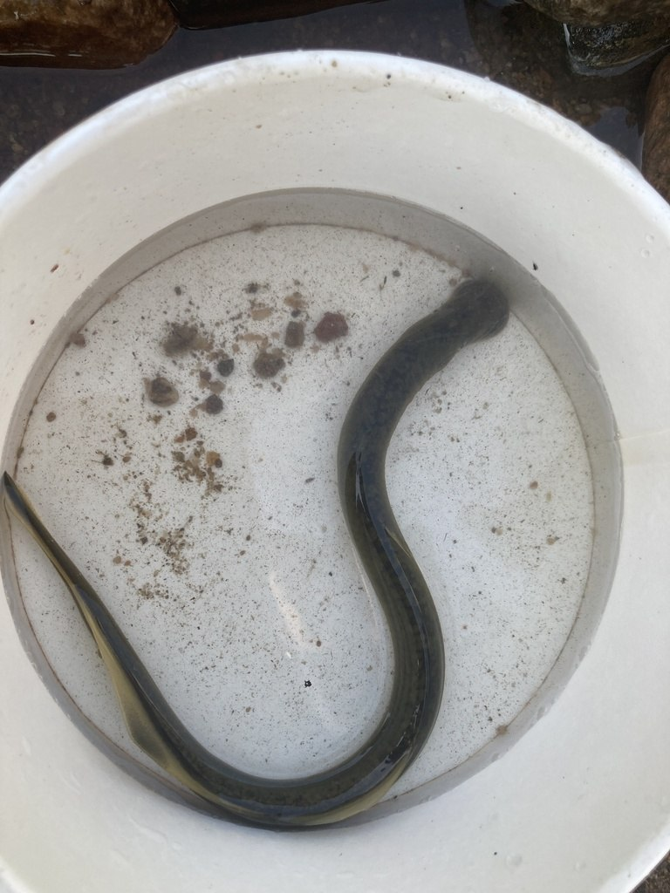
001国家Ⅱ级
七鳃鳗科保护动物
东北七鳃鳗
Eudontomyzon morii
七鳃鳗科中型鱼类，分布记录见于东北，多见于底栖水层，以鱼类等为食。
查看档案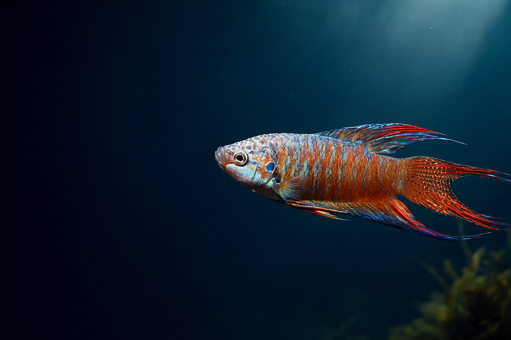
A field atlas of Chinese native freshwater fishes
从东北的冷冽溪流到西南的高原湖泊，中国记录有 1723 种原生及特有淡水鱼类。本图鉴从中收录 286 种资料完整、具备影像记录的物种，以档案的方式记录它们的形态、分布、典型生境与生活史，并标注保护等级与可行的利用方式。
中国是全球淡水鱼类多样性最丰富的国家之一。鲤形目鱼类在长江、珠江与高原水系中分化出极其多样的类群，许多物种仅在一条溪流或一个湖泊中被记录。
本图鉴以 FishBase 中国国家物种名录为底本，筛选原生种与特有种，并只保留同时具备中文名、分类信息、分布记录、形态计数、栖息环境、生活习性文字与影像的物种。
保护等级依据 2021 年《国家重点保护野生动物名录》逐条核对；非保护物种会按体型、食性与生境给出垂钓、饲养或野采提示，所有建议都以合法、适量、就地保护为前提。

001Eudontomyzon morii
七鳃鳗科中型鱼类，分布记录见于东北，多见于底栖水层，以鱼类等为食。
查看档案 002
002
Lethenteron camtschaticum
七鳃鳗科大型鱼类，分布于黑龙江，多见于底栖水层，以有机碎屑、鱼类等为食。
查看档案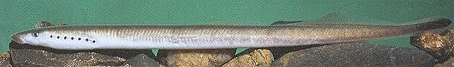
003Lethenteron reissneri
七鳃鳗科中型鱼类，分布记录见于东北，多见于底栖水层，以底栖动物和小型鱼类为主。
查看档案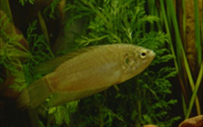
004Macropodus ocellatus
丝足鲈科小型鱼类，分布于江苏、黑龙江，多见于近底层水层，以底栖动物和小型鱼类为主。
查看档案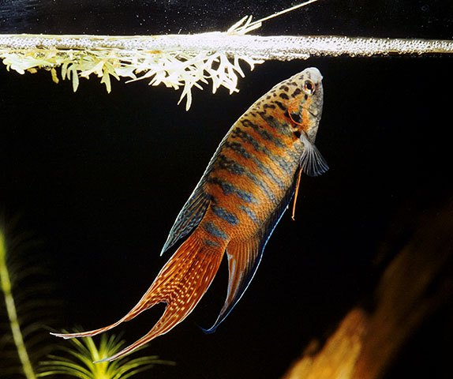
005Macropodus opercularis
丝足鲈科小型鱼类，分布于云南、江西、海南、台湾，多见于中上层水层，以鱼类、底栖无脊椎动物等为食。
查看档案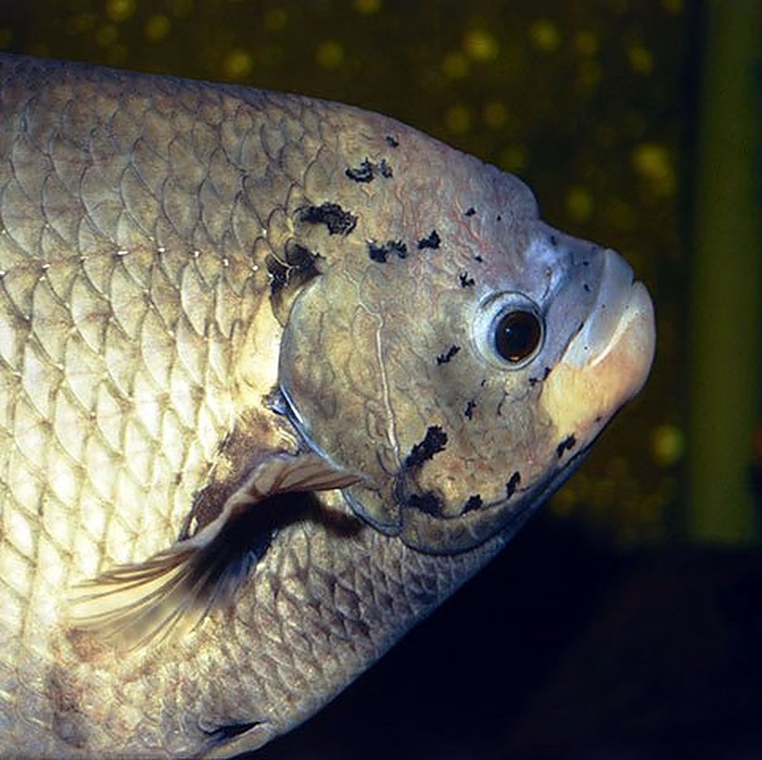
006Osphronemus goramy
丝足鲈科大型鱼类，分布记录见于华南，多见于近底层水层，以有机碎屑、鱼类等为食。
查看档案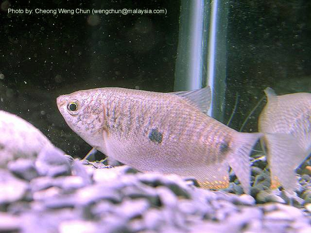
007Trichopodus trichopterus
丝足鲈科中小型鱼类，分布于云南，多见于近底层水层，以有机碎屑、底栖藻类与水草等为食。
查看档案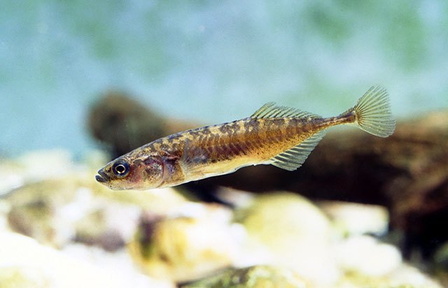
008Pungitius pungitius
刺鱼科小型鱼类，分布记录见于东北、华北，多见于近底层水层，以鱼类、钩虾等为食。
查看档案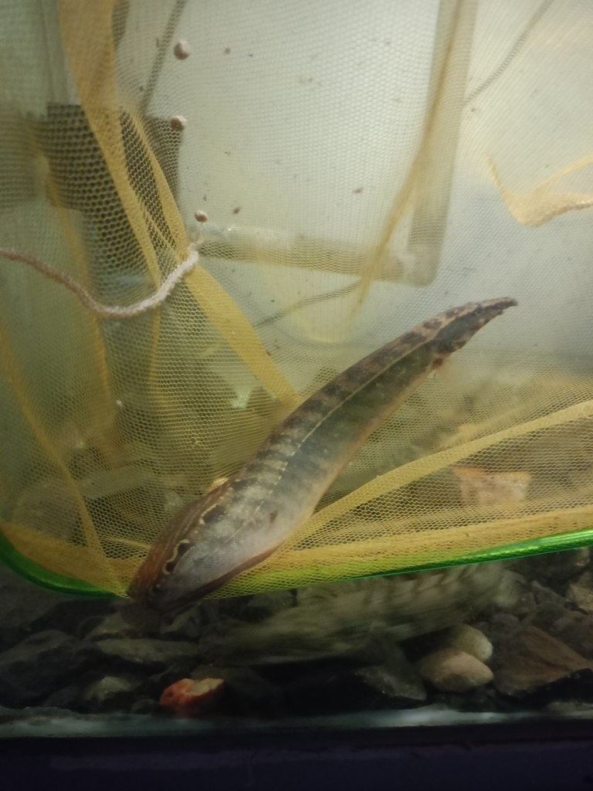
009Macrognathus aculeatus
刺鳅科中型鱼类，分布记录见于华南、华东，多见于近底层水层，以底栖动物和小型鱼类为主。
查看档案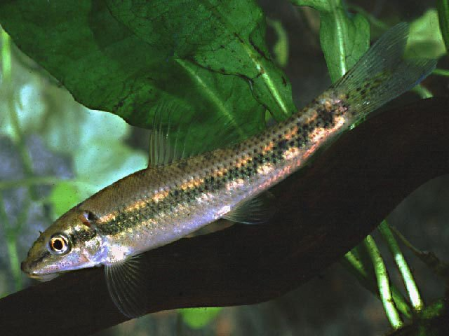
010Gyrinocheilus aymonieri
双孔鱼科中型鱼类，分布于云南，多见于底栖水层，以底栖藻类与水草、周丛生物等为食。
查看档案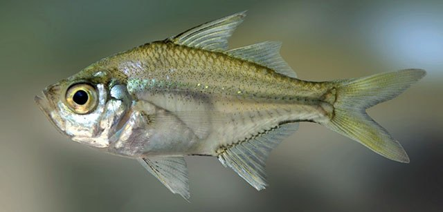
011Ambassis gymnocephalus
双边鱼科中小型鱼类，分布于广东，多见于底栖水层，以鱼类、底栖甲壳类等为食。
查看档案 012
012
Monopterus albus
合鳃鱼科大型鱼类，分布于云南、广东，多见于底栖水层，以有机碎屑、底栖藻类与水草等为食。
查看档案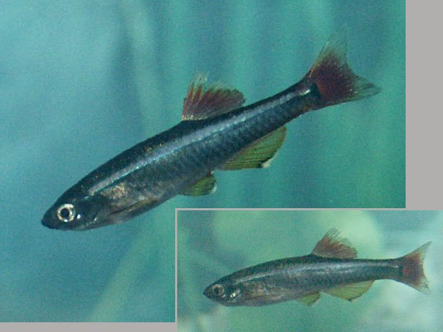
013Tanichthys albonubes
唐鱼科小型鱼类，分布于广东、海南，多见于底栖水层，以有机碎屑、浮游无脊椎动物等为食。
查看档案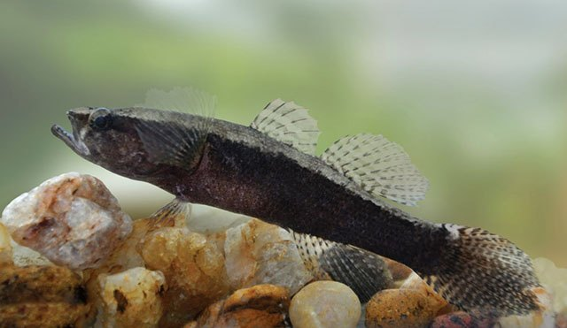
014Eleotris fusca
塘鳢科中型鱼类，分布于广东，多见于底栖水层，以鱼类、蟹类等为食。
查看档案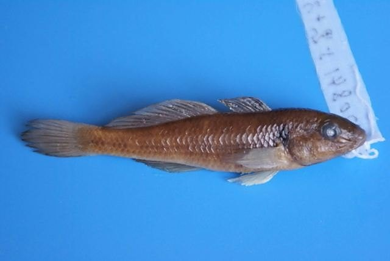
015Eleotris melanosoma
塘鳢科中型鱼类，分布于广东、海南、台湾，多见于底栖水层，以鱼类等大型动物为主。
查看档案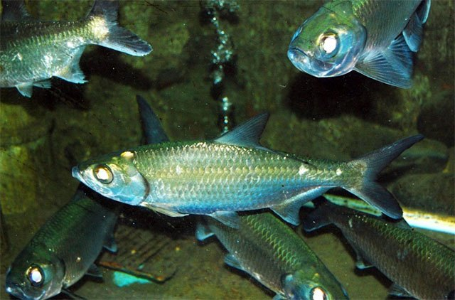
016Megalops cyprinoides
大海鲢科大型鱼类，分布于福建、海南、台湾，多见于近底层水层，以鱼类、底栖甲壳类等为食。
查看档案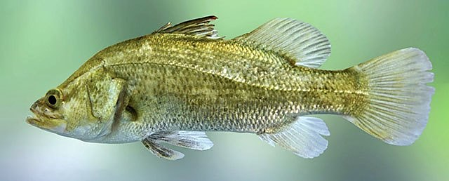
017Lates calcarifer
尖吻鲈科大型鱼类，分布于台湾，多见于底栖水层，以鱼类、底栖甲壳类等为食。
查看档案Pangasianodon gigas
巨鲶科大型鱼类，分布于云南，多见于近底层水层，以底栖藻类与水草、周丛生物等为食。
查看档案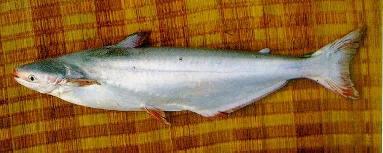
019Pangasius krempfi
巨鲶科大型鱼类，分布于广西、广东，多见于近底层水层，以植物、藻类或有机碎屑为主。
查看档案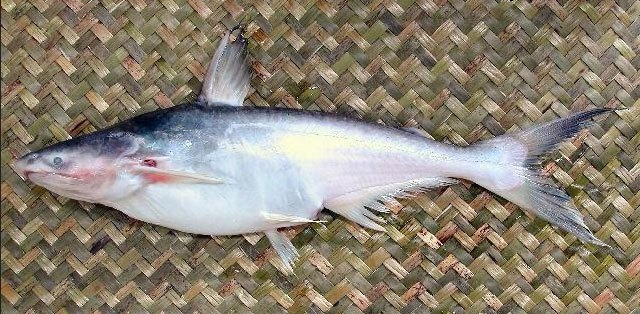
020Pangasius nasutus
巨鲶科大型鱼类，分布记录见于西南，多见于近底层水层，以鱼类等为食。
查看档案 021
021
Pangasius sanitwongsei
巨鲶科大型鱼类，分布于云南，多见于近底层水层，以鱼类、底栖甲壳类等为食。
查看档案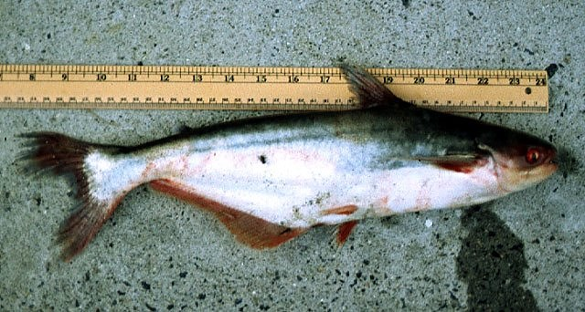
022Pseudolais micronemus
巨鲶科大型鱼类，分布记录见于西南，多见于近底层水层，以有机碎屑、底栖无脊椎动物等为食。
查看档案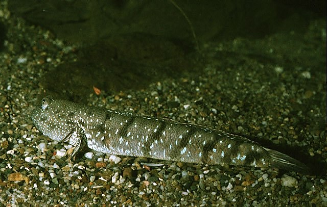
023Boleophthalmus boddarti
弹涂鱼科中小型鱼类，分布记录见于华南，多见于底栖水层，以底栖藻类与水草、底栖桡足类等为食。
查看档案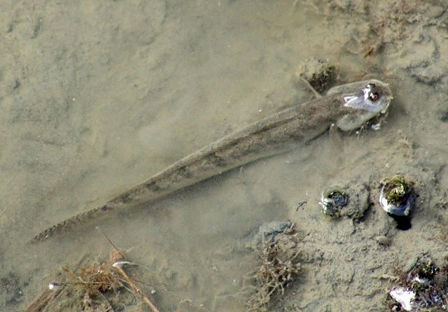
024Pseudapocryptes elongatus
弹涂鱼科中小型鱼类，分布记录见于华南，多见于底栖水层，以底栖动物和小型鱼类为主。
查看档案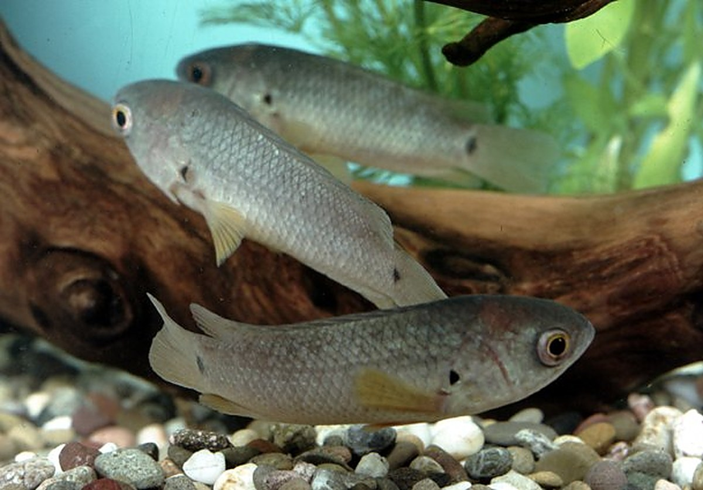
025Anabas testudineus
攀鲈科中型鱼类，分布于云南、广东、海南，多见于底栖水层，以有机碎屑、鱼类等为食。
查看档案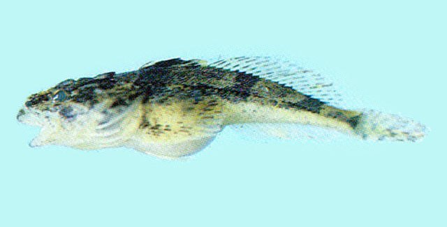
026Trachidermus fasciatus
杜父鱼科小型鱼类，分布记录见于华东、华北，多见于近底层水层，以多毛类等为食。
查看档案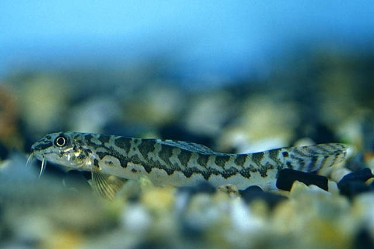
027Acanthocobitis botia
条鳅科中小型鱼类，分布于云南，多见于底栖水层，以昆虫等为食。
查看档案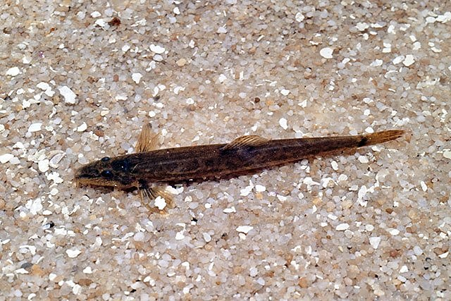
028Barbatula barbatula
条鳅科中小型鱼类，分布记录见于西北，多见于底栖水层，以钩虾、底栖甲壳类等为食。
查看档案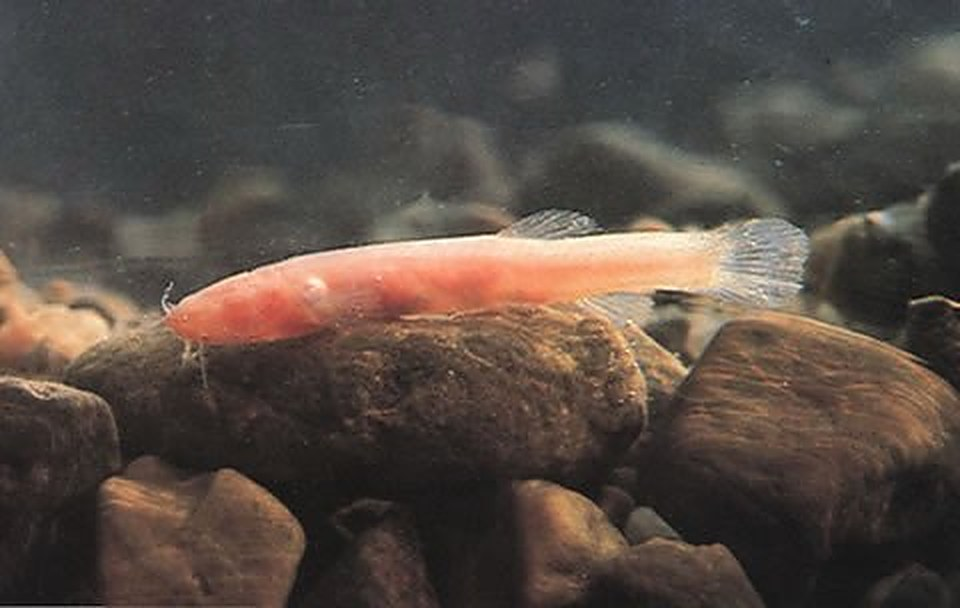
029Karstsinnectes anophthalmus
条鳅科小型鱼类，为中国特有种，分布于贵州、广西，多见于底栖水层，动植物兼食。
查看档案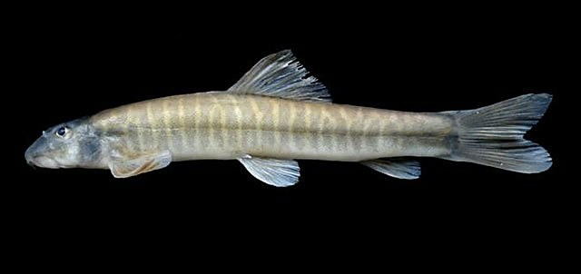
030Neonoemacheilus labeosus
条鳅科中小型鱼类，分布于云南，多见于底栖水层，以昆虫等为食。
查看档案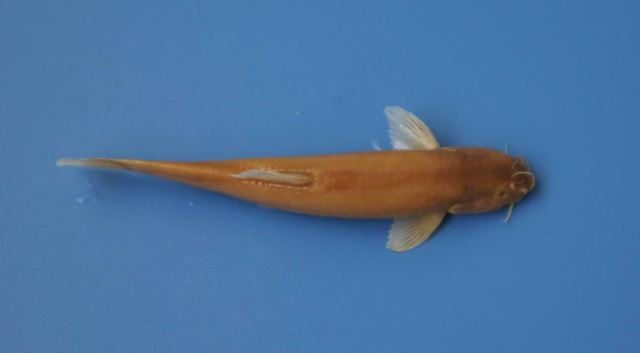
031Oreonectes furcocaudalis
条鳅科小型鱼类，为中国特有种，分布于广西，多见于底栖水层，动植物兼食。
查看档案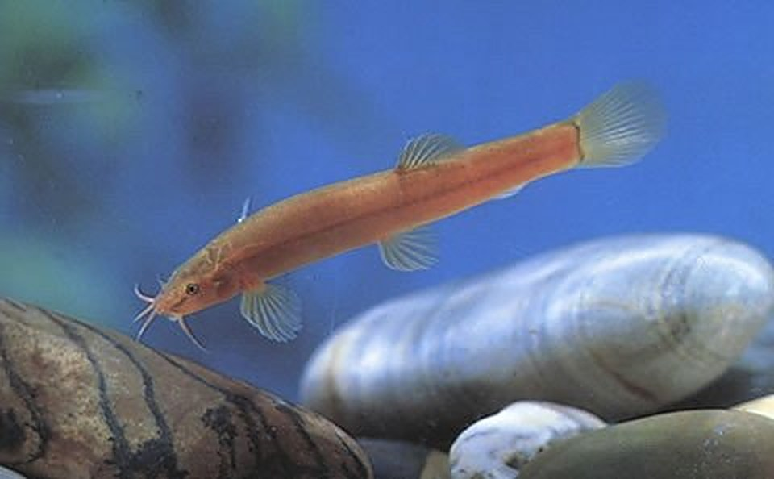
032Oreonectes platycephalus
条鳅科中小型鱼类，分布于广西、广东、香港，多见于底栖水层，以有机碎屑、底栖无脊椎动物等为食。
查看档案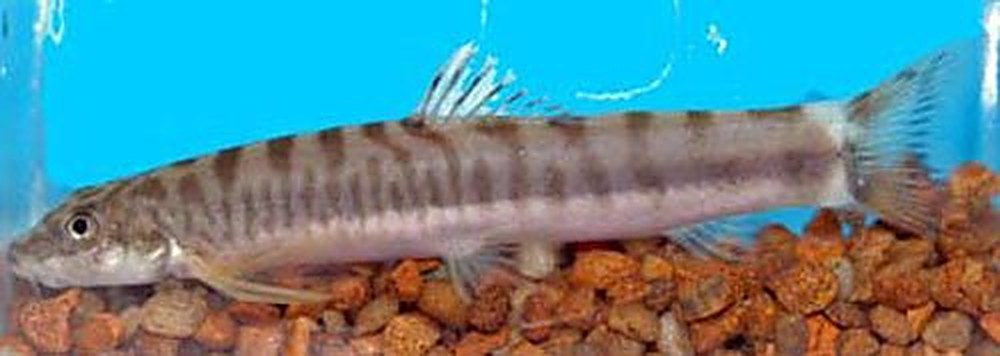
033Schistura bucculenta
条鳅科中小型鱼类，分布记录见于西南，多见于底栖水层，动植物兼食。
查看档案 034
034
Schistura kengtungensis
条鳅科中小型鱼类，分布于云南，多见于近底层水层，动植物兼食。
查看档案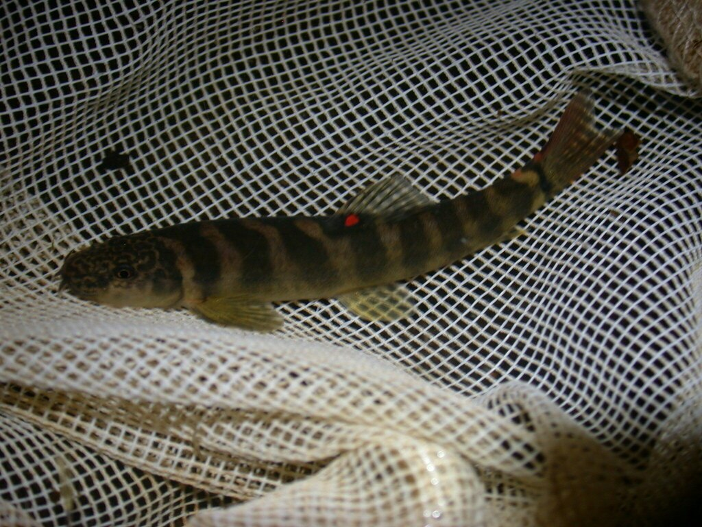
035Schistura nicholsi
条鳅科小型鱼类，分布于云南，多见于近底层水层，以底栖藻类与水草、昆虫等为食。
查看档案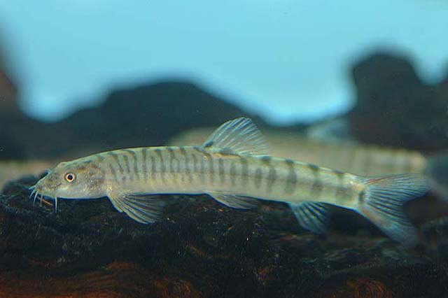
036Schistura poculi
条鳅科小型鱼类，分布于云南，多见于近底层水层，动植物兼食。
查看档案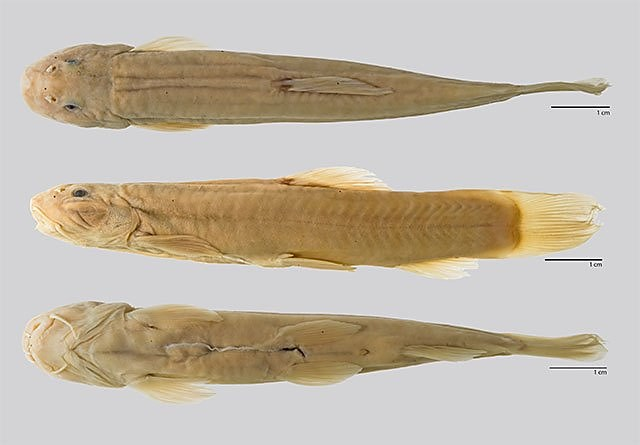
037Schistura schultzi
条鳅科小型鱼类，分布于云南，多见于近底层水层，以昆虫等为食。
查看档案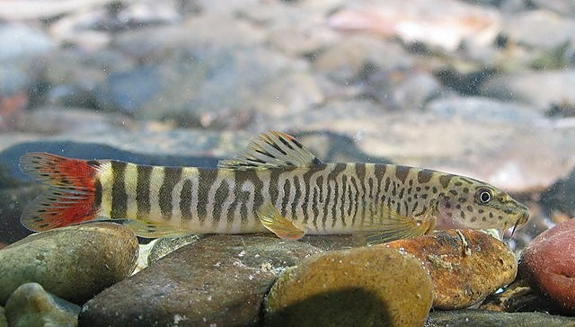
038Schistura vinciguerrae
条鳅科小型鱼类，分布于云南，多见于近底层水层，动植物兼食。
查看档案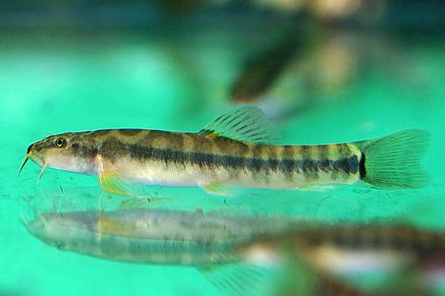
039Schistura waltoni
条鳅科小型鱼类，分布记录见于西南，多见于近底层水层，以昆虫、底栖无脊椎动物等为食。
查看档案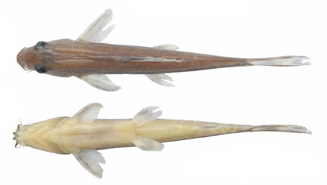
040Traccatichthys pulcher
条鳅科中小型鱼类，分布于广东、海南，多见于近底层水层，动植物兼食。
查看档案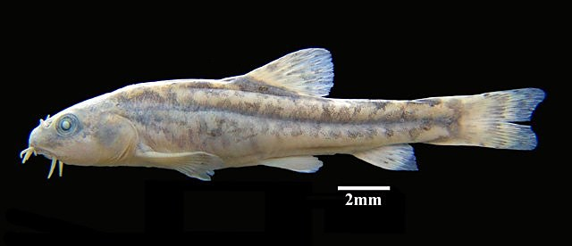
041Triplophysa jianchuanensis
条鳅科小型鱼类，分布于云南，多见于底栖水层，动植物兼食。
查看档案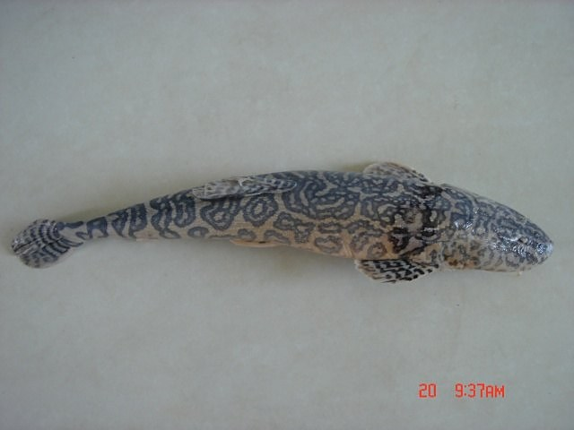
042Triplophysa siluroides
条鳅科中型鱼类，分布于青海，多见于近底层水层，以底栖动物和小型鱼类为主。
查看档案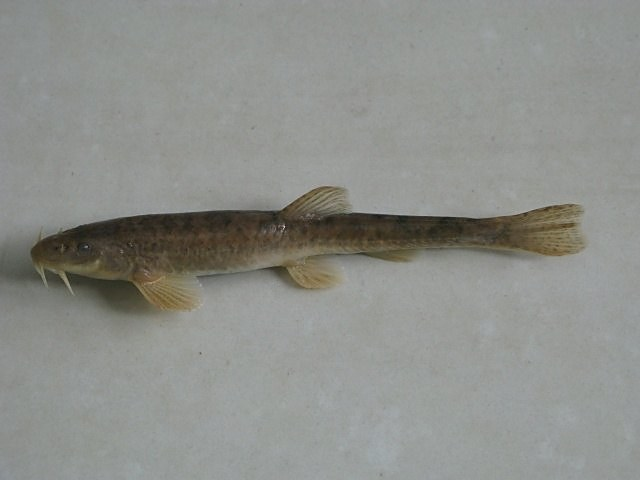
043Triplophysa stolickai
条鳅科中小型鱼类，分布于青海、西藏，多见于近底层水层，以底栖动物和小型鱼类为主。
查看档案 044
044
Yunnanilus polylepis
条鳅科小型鱼类，分布于云南，多见于底栖水层，以底栖动物和小型鱼类为主。
查看档案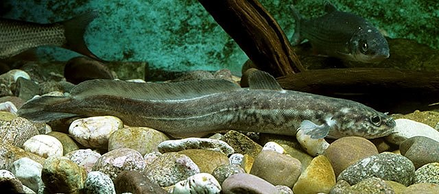
045Lota lota
江鳕科大型鱼类，分布记录见于东北、西北，多见于底栖水层，以鱼类、蛙类等为食。
查看档案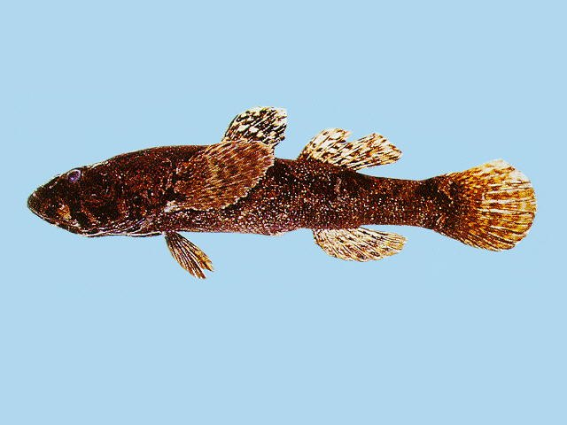
046Odontobutis obscurus
沙塘鳢科中小型鱼类，分布于广西、海南，多见于近底层水层，以底栖动物和小型鱼类为主。
查看档案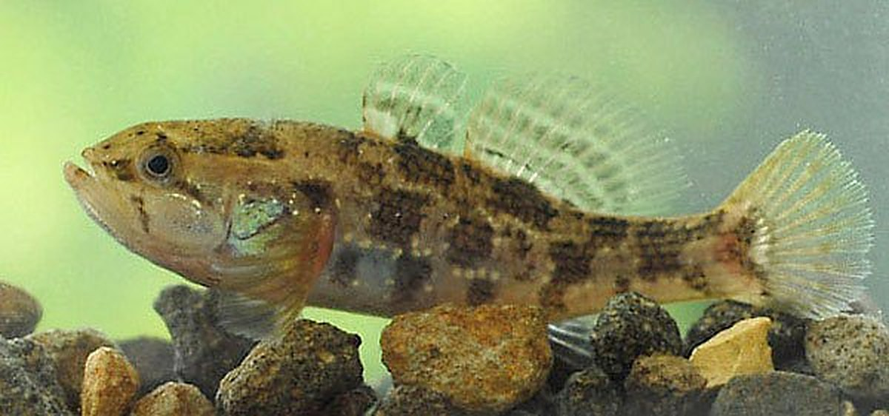
047Perccottus glenii
沙塘鳢科中型鱼类，分布于福建，多见于底栖水层，以鱼类、底栖甲壳类等为食。
查看档案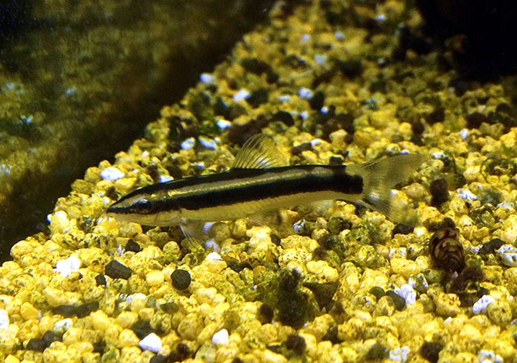
048Ambastaia nigrolineata
沙鳅科小型鱼类，分布于云南，多见于底栖水层，以昆虫等为食。
查看档案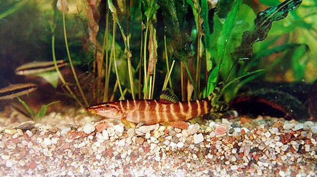
049Sinibotia longiventralis
沙鳅科中小型鱼类，分布于云南，多见于底栖水层，以底栖藻类与水草、昆虫等为食。
查看档案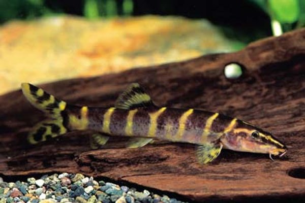
050Sinibotia superciliaris
沙鳅科中小型鱼类，分布于云南、四川、贵州，多见于底栖水层，以昆虫等为食。
查看档案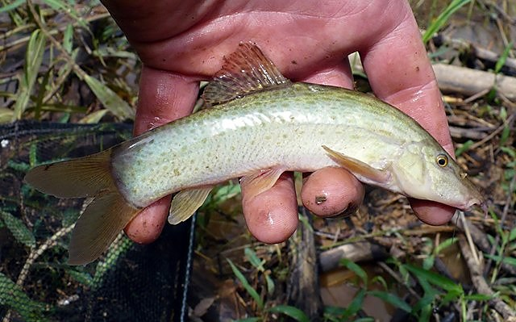
051Syncrossus beauforti
沙鳅科中型鱼类，分布于云南，多见于底栖水层，以底栖甲壳类、软体动物等为食。
查看档案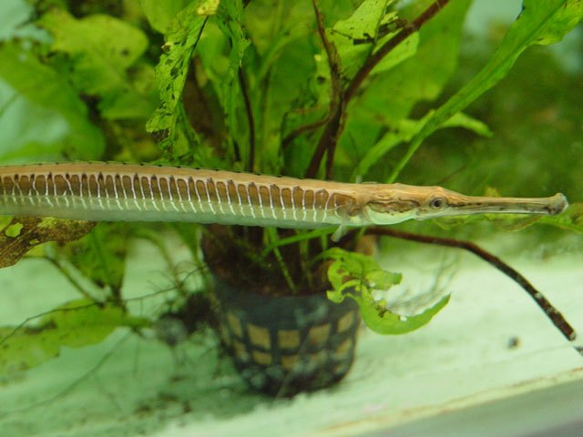
052Doryichthys boaja
海龙科中型鱼类，分布于台湾，多见于近底层水层，以底栖甲壳类、昆虫等为食。
查看档案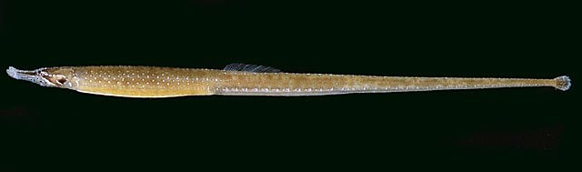
053Hippichthys penicillus
海龙科中小型鱼类，分布记录见于华南、华东，多见于底栖水层，以底栖动物和小型鱼类为主。
查看档案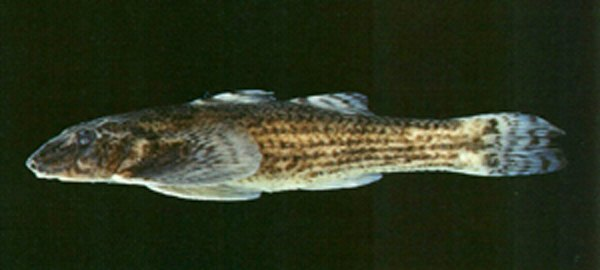
054Rhyacichthys aspro
溪鳢科中型鱼类，分布于台湾，多见于底栖水层，以底栖动物和小型鱼类为主。
查看档案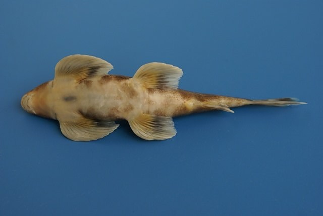
055Balitora kwangsiensis
爬鳅科中小型鱼类，分布于云南、广西、广东、海南，多见于底栖水层，以植物性饵料和底栖无脊椎动物为主。
查看档案Balitora meridionalis
爬鳅科小型鱼类，分布于云南，多见于底栖水层，以周丛生物、浮游植物等为食。
查看档案Esox lucius
狗鱼科大型肉食性鱼类，分布于西北与东北，多见于水草茂密的静水或缓流，以鱼类、蛙类等为食。
查看档案Esox reichertii
狗鱼科大型鱼类，分布记录见于东北，多见于底栖水层，以鱼类等为食。
查看档案Akysis brachybarbatus
粒鲇科小型鱼类，分布于云南，多见于近底层水层，以底栖动物和小型鱼类为主。
查看档案Clupisoma sinense
缺鳍鲇科中型鱼类，分布于云南，多见于底栖水层，以底栖动物和小型鱼类为主。
查看档案Clarias fuscus
胡子鲇科中小型鱼类，分布于广西、广东、海南、台湾，多见于底栖水层，以鱼类、底栖甲壳类等为食。
查看档案Clarias meladerma
胡子鲇科中型鱼类，分布记录见于西南，多见于底栖水层，以底栖动物和小型鱼类为主。
查看档案Hypomesus olidus
胡瓜鱼科中小型鱼类，分布记录见于东北，多见于中上层水层，以浮游植物、底栖甲壳类等为食。
查看档案Sewellia lineolata
腹吸鳅科小型鱼类，分布记录见于西南，多见于底栖水层，以底栖藻类与水草、底栖无脊椎动物等为食。
查看档案Vanmanenia pingchowensis
腹吸鳅科中小型鱼类，分布于贵州、广西、广东、湖南，多见于底栖水层，动植物兼食。
查看档案Acanthogobius flavimanus
虾虎鱼科中型鱼类，分布记录见于东北、华北、华东，多见于底栖水层，以底栖甲壳类、多毛类等为食。
查看档案Acentrogobius caninus
虾虎鱼科中小型鱼类，分布于海南，多见于底栖水层，以底栖无脊椎动物等为食。
查看档案Awaous melanocephalus
虾虎鱼科中小型鱼类，分布于海南、台湾，多见于近底层水层，以植物性饵料和底栖无脊椎动物为主。
查看档案Awaous ocellaris
虾虎鱼科中小型鱼类，分布于台湾，多见于底栖水层，以植物性饵料和底栖无脊椎动物为主。
查看档案Ctenotrypauchen chinensis
虾虎鱼科中小型鱼类，分布记录见于华东、华南，多见于底栖水层，以鱼类等大型动物为主。
查看档案Eugnathogobius siamensis
虾虎鱼科小型鱼类，分布于福建，多见于底栖水层，以昆虫等为食。
查看档案Favonigobius gymnauchen
虾虎鱼科中小型鱼类，分布记录见于华东、华南，以有机碎屑、双壳类等为食。
查看档案Glossogobius aureus
虾虎鱼科中型鱼类，分布于海南，多见于底栖水层，以鱼类、底栖甲壳类等为食。
查看档案Glossogobius giuris
虾虎鱼科中型鱼类，分布于海南、澳门，多见于近底层水层，以有机碎屑、鱼类等为食。
查看档案Gobiopsis macrostoma
虾虎鱼科中小型鱼类，分布于广东，多见于底栖水层，以鱼类、底栖甲壳类等为食。
查看档案Hemigobius hoevenii
虾虎鱼科小型鱼类，分布于广东、海南、香港，多见于底栖水层，以底栖动物和小型鱼类为主。
查看档案Rhinogobius brunneus
虾虎鱼科小型鱼类，分布于台湾，多见于底栖水层，以底栖动物和小型鱼类为主。
查看档案Rhinogobius candidianus
虾虎鱼科小型鱼类，分布于台湾，多见于近底层水层，以底栖动物和小型鱼类为主。
查看档案Rhinogobius delicatus
虾虎鱼科小型鱼类，分布于台湾，多见于近底层水层，以底栖动物和小型鱼类为主。
查看档案Rhinogobius giurinus
虾虎鱼科中小型鱼类，分布于台湾，多见于底栖水层，以底栖藻类与水草、介形类等为食。
查看档案Rhinogobius lithopolychroma
虾虎鱼科小型鱼类，分布记录见于华东，多见于底栖水层，以底栖动物和小型鱼类为主。
查看档案Rhinogobius sudoccidentalis
虾虎鱼科小型鱼类，分布于贵州、重庆，多见于底栖水层，以底栖动物和小型鱼类为主。
查看档案Sicyopus zosterophorus
虾虎鱼科小型鱼类，分布于广东，多见于近底层水层。
查看档案Stiphodon atropurpureus
虾虎鱼科小型鱼类，分布于广东、台湾，多见于近底层水层。
查看档案Stiphodon imperiorientis
虾虎鱼科小型鱼类，分布于广东、台湾，多见于近底层水层。
查看档案Stiphodon percnopterygionus
虾虎鱼科小型鱼类，分布于广东、台湾，多见于底栖水层。
查看档案Tridentiger trigonocephalus
虾虎鱼科中小型鱼类，分布于广东、海南，多见于底栖水层，以底栖动物和小型鱼类为主。
查看档案Moringua macrocephalus
蚓鳗科中型鱼类，分布于广东、海南，多见于近底层水层，以底栖动物和小型鱼类为主。
查看档案Moringua raitaborua
蚓鳗科中型鱼类，分布记录见于华南，多见于底栖水层，以底栖动物和小型鱼类为主。
查看档案 090
090
Pisodonophis cancrivorus
蛇鳗科大型鱼类，分布记录见于华南、华东，以鱼类等大型动物为主。
查看档案Bostrychus sinensis
蟾鱼科中小型鱼类，分布于台湾，多见于底栖水层，以鱼类、底栖甲壳类等为食。
查看档案Scatophagus argus
金钱鱼科中型鱼类，分布于广东、海南，多见于底栖水层，以有机碎屑、鱼类等为食。
查看档案Salanx ariakensis
银鱼科中小型鱼类，分布记录见于华东、华北，多见于底栖水层，以硅藻、底栖桡足类等为食。
查看档案Gerres decacanthus
银鲈科小型鱼类，分布于广东、福建，多见于近底层水层，以底栖动物和小型鱼类为主。
查看档案Cranoglanis bouderius
长臀鲿科中型鱼类，分布于贵州、广西、广东，多见于底栖水层，以底栖动物和小型鱼类为主。
查看档案Leuciscus idus
雅罗鱼科大型鱼类，分布记录见于西北，多见于近底层水层，以鱼类、底栖甲壳类等为食。
查看档案Leuciscus merzbacheri
雅罗鱼科中小型鱼类，为中国特有种，分布于新疆，多见于近底层水层，以底栖藻类与水草、昆虫等为食。
查看档案Leuciscus waleckii
雅罗鱼科中型鱼类，分布于黑龙江，多见于近底层水层，以昆虫等为食。
查看档案Phoxinus phoxinus
雅罗鱼科中小型鱼类，分布于内蒙古、黑龙江，多见于底栖水层，以有机碎屑、鱼类等为食。
查看档案Pseudaspius brandtii
雅罗鱼科中型鱼类，分布于黑龙江、吉林，多见于底栖水层，以有机碎屑、鱼类等为食。
查看档案Pseudaspius hakonensis
雅罗鱼科中型鱼类，分布记录见于东北，多见于近底层水层，杂食性，以底栖无脊椎动物为主。
查看档案Rhynchocypris czekanowskii
雅罗鱼科小型鱼类，分布于黑龙江，多见于底栖水层，以底栖动物和小型鱼类为主。
查看档案Rhynchocypris oxycephala
雅罗鱼科中小型鱼类，分布于四川、湖北、河南、河北、山西，多见于底栖水层，以鱼类、昆虫等为食。
查看档案Rhynchocypris percnurus
雅罗鱼科中小型鱼类，分布记录见于东北，多见于近底层水层，以绿藻、钩虾等为食。
查看档案Rutilus rutilus
雅罗鱼科中型鱼类，分布记录见于西北，多见于近底层水层，以有机碎屑、底栖藻类与水草等为食。
查看档案Oryzias sinensis
青鳉科小型鱼类，分布于云南，多见于近底层水层，以底栖藻类与水草、浮游无脊椎动物等为食。
查看档案Plecoglossus altivelis
香鱼科中小型洄游鱼类，中国沿海通海河流有分布，以附着藻类和小型水生动物为食。
查看档案Notopterus notopterus
驼背鱼科大型鱼类，分布记录见于西南，多见于底栖水层，以鱼类、底栖甲壳类等为食。
查看档案Abbottina rivularis
鮈科中小型鱼类，分布于云南、贵州、广东、湖北、浙江，多见于近底层水层，以底栖动物和小型鱼类为主。
查看档案Coreius septentrionalis
鮈科中型鱼类，分布于甘肃、内蒙古、宁夏，多见于近底层水层，以底栖动物和小型鱼类为主。
查看档案Gobio gobio
鮈科中小型鱼类，分布记录见于西北，多见于近底层水层，以底栖藻类与水草、介形类等为食。
查看档案Gobiobotia lii
鮈科小型鱼类，分布于湖北、湖南，多见于近底层水层，以底栖动物和小型鱼类为主。
查看档案Hemibarbus labeo
鮈科大型鱼类，分布于四川、广东、福建、山西、黑龙江，多见于近底层水层，以底栖动物和小型鱼类为主。
查看档案Hemibarbus maculatus
鮈科中型鱼类，分布于云南，多见于近底层水层，以底栖甲壳类、昆虫等为食。
查看档案Microphysogobio labeoides
鮈科小型鱼类，分布于广西、广东、海南，多见于近底层水层，以底栖动物和小型鱼类为主。
查看档案Paracanthobrama guichenoti
鮈科中型鱼类，分布于湖北、江西、安徽、江苏，多见于近底层水层，以底栖动物和小型鱼类为主。
查看档案Pseudorasbora parva
鮈科中小型鱼类，分布于四川、广西、江苏、甘肃，多见于近底层水层，以鱼类、绿藻等为食。
查看档案Squalidus chankaensis
鮈科中小型鱼类，分布于吉林，多见于近底层水层，以钩虾、昆虫等为食。
查看档案Euchiloglanis kishinouyei
鮡科中小型鱼类，分布于云南、四川、青海、西藏，多见于底栖水层，以底栖动物和小型鱼类为主。
查看档案Gagata cenia
鮡科中小型鱼类，分布于云南，多见于底栖水层，以底栖动物和小型鱼类为主。
查看档案Glyptothorax annandalei
鮡科中小型鱼类，分布于西藏，多见于近底层水层，以底栖动物和小型鱼类为主。
查看档案Glyptothorax fuscus
鮡科中小型鱼类，分布记录见于西南，多见于底栖水层，以昆虫等为食。
查看档案Glyptothorax interspinalum
鮡科中小型鱼类，分布于云南，多见于底栖水层，以底栖动物和小型鱼类为主。
查看档案Glyptothorax lampris
鮡科中小型鱼类，分布于云南，多见于近底层水层，以昆虫等为食。
查看档案Glyptothorax laosensis
鮡科中小型鱼类，分布于云南，多见于近底层水层，以昆虫等为食。
查看档案Glyptothorax macromaculatus
鮡科中小型鱼类，分布于云南，多见于底栖水层，以底栖动物和小型鱼类为主。
查看档案Glyptothorax sinensis
鮡科中型鱼类，分布于湖南、湖北、江西、甘肃，多见于近底层水层，以底栖动物和小型鱼类为主。
查看档案Glyptothorax trilineatus
鮡科中型鱼类，分布记录见于西南，多见于近底层水层，以虾类、昆虫等为食。
查看档案Glyptothorax zanaensis
鮡科中小型鱼类，分布于云南、西藏，多见于底栖水层，以底栖动物和小型鱼类为主。
查看档案Hara hara
鮡科中小型鱼类，分布记录见于西南，多见于底栖水层，以底栖动物和小型鱼类为主。
查看档案Oreoglanis macroptera
鮡科小型鱼类，分布于云南，多见于近底层水层，以底栖动物和小型鱼类为主。
查看档案Pseudecheneis sulcata
鮡科中小型鱼类，分布于西藏，多见于底栖水层，以底栖动物和小型鱼类为主。
查看档案Terapon jarbua
鯻科中型鱼类，分布记录见于华南、华东，多见于底栖水层，以有机碎屑、鱼类等为食。
查看档案Hyporhamphus intermedius
鱵科中小型鱼类，分布于台湾，多见于中上层水层，以浮游无脊椎动物等为食。
查看档案Hyporhamphus limbatus
鱵科中型鱼类，分布于广东，多见于中上层水层，以昆虫等为食。
查看档案Pao leiurus
鲀科中小型鱼类，分布于云南，多见于底栖水层，以有机碎屑、底栖藻类与水草等为食。
查看档案Takifugu obscurus
鲀科中型鱼类，分布记录见于华东、华南，多见于底栖水层，以底栖动物和小型鱼类为主。
查看档案Takifugu rubripes
鲀科大型河口与近海鱼类，中国沿海常见，多见于底层，以鱼类、蟹类等为食。
查看档案Hemisilurus heterorhynchus
鲇科大型鱼类，分布记录见于西南，多见于底栖水层，以鱼类、虾类等为食。
查看档案Hemisilurus mekongensis
鲇科大型鱼类，分布于云南，多见于底栖水层，以鱼类、底栖藻类与水草等为食。
查看档案Micronema moorei
鲇科中小型鱼类，分布于云南，多见于近底层水层，以鱼类、虾类等为食。
查看档案Ompok siluroides
鲇科中小型鱼类，分布记录见于西南，多见于底栖水层，以鱼类、底栖甲壳类等为食。
查看档案Phalacronotus apogon
鲇科大型鱼类，分布于云南，多见于近底层水层，以鱼类等为食。
查看档案Pterocryptis cochinchinensis
鲇科中型鱼类，分布于广西、福建、海南，多见于底栖水层，以鱼类、底栖甲壳类等为食。
查看档案Silurus asotus
鲇科大型鱼类，分布于台湾，多见于底栖水层，以鱼类等为食。
查看档案Silurus mento
鲇科中型鱼类，为中国特有种，分布于云南，多见于底栖水层，以鱼类等大型动物为主。
查看档案Silurus soldatovi
鲇科大型鱼类，分布于黑龙江，多见于底栖水层，以鱼类等大型动物为主。
查看档案Wallago attu
鲇科大型鱼类，分布于云南，多见于底栖水层，以鱼类、底栖甲壳类等为食。
查看档案Gymnocephalus cernua
鲈科中型鱼类，分布记录见于西北，多见于近底层水层，以有机碎屑、鱼类等为食。
查看档案Brachymystax lenok
鲑科大型鱼类，分布记录见于东北、华北、西北，多见于近底层水层，以鱼类、蛙类等为食。
查看档案Hucho bleekeri
鲑科大型鱼类，中国特有种，分布于四川、陕西和青海的冷水河流，以鱼类和昆虫为食。
查看档案Hucho ishikawae
鲑科中型鱼类，分布记录见于东北，多见于近底层水层，以鱼类等大型动物为主。
查看档案Salvelinus malma
鲑科大型鱼类，分布记录见于东北，多见于近底层水层，以鱼类、钩虾等为食。
查看档案Stenodus leucichthys
鲑科大型鱼类，分布于新疆，多见于底栖水层，以鱼类、等足类等为食。
查看档案Thymallus arcticus
鲑科大型鱼类，分布记录见于东北、西北，多见于近底层水层，以小型哺乳类、昆虫等为食。
查看档案Acipenser baerii
鲟科大型鱼类，国内分布于新疆额尔齐斯河，多见于底栖水层，以底栖动物为主食。
查看档案Acipenser dauricus
鲟科大型鱼类，分布于黑龙江、辽宁，多见于底栖水层，以鱼类、底栖无脊椎动物等为食。
查看档案Acipenser mikadoi
鲟科大型鱼类，分布记录见于东北，多见于底栖水层，以底栖动物和小型鱼类为主。
查看档案Acipenser schrenckii
鲟科大型鱼类，分布于黑龙江，多见于底栖水层，以昆虫、软体动物等为食。
查看档案Acipenser sinensis
鲟科大型鱼类，分布于广东、浙江、上海，多见于底栖水层，以底栖动物和小型鱼类为主。
查看档案Aspiorhynchus laticeps
鲤科大型鱼类，分布于新疆，多见于近底层水层，以植物性饵料和底栖无脊椎动物为主。
查看档案Barbodes semifasciolatus
鲤科小型鱼类，分布于云南、广西、海南，多见于近底层水层，以有机碎屑、底栖甲壳类等为食。
查看档案Barbus barbus
鲤科大型鱼类，分布记录见于西北，多见于近底层水层，以底栖藻类与水草、底栖甲壳类等为食。
查看档案 164
164
Carassius auratus
鲤科中型鱼类，分布于云南、海南，多见于近底层水层，以有机碎屑、底栖藻类与水草等为食。
查看档案Carassius carassius
鲤科大型鱼类，分布于新疆，多见于底栖水层，以底栖桡足类、昆虫等为食。
查看档案Carassius gibelio
鲤科中型鱼类，分布记录见于东北、华北、西北，多见于近底层水层，以植物性饵料和底栖无脊椎动物为主。
查看档案Chuanchia labiosa
鲤科中小型鱼类，中国特有种，分布于青海、四川的黄河上游及其支流，以着生硅藻和水生昆虫为食。
查看档案Cirrhinus molitorella
鲤科中型鱼类，分布于云南、广西、广东、福建、海南，多见于近底层水层，以有机碎屑、底栖藻类与水草等为食。
查看档案Crossocheilus reticulatus
鲤科中小型鱼类，分布于云南，多见于近底层水层，以底栖藻类与水草、周丛生物等为食。
查看档案Cyprinus carpio
鲤科大型鱼类，分布记录见于全国，多见于近底层水层，以有机碎屑、鱼类等为食。
查看档案Cyprinus megalophthalmus
鲤科中小型鱼类，为中国特有种，分布于云南，多见于近底层水层，以鱼类、底栖藻类与水草等为食。
查看档案Cyprinus pellegrini
鲤科中型鱼类，为中国特有种，分布于云南，多见于近底层水层，以底栖藻类与水草、浮游无脊椎动物等为食。
查看档案Cyprinus rubrofuscus
鲤科中型鱼类，分布记录见于西南，多见于近底层水层，以底栖动物和小型鱼类为主。
查看档案Discogobio yunnanensis
鲤科中小型鱼类，为中国特有种，分布于云南、四川、贵州，多见于近底层水层。
查看档案Garra kempi
鲤科中小型鱼类，分布于云南、西藏，多见于近底层水层。
查看档案Hampala macrolepidota
鲤科大型鱼类，分布于云南，多见于近底层水层，以鱼类、底栖藻类与水草等为食。
查看档案Hypsibarbus pierrei
鲤科中型鱼类，分布于云南，多见于近底层水层，动植物兼食。
查看档案Labiobarbus leptocheilus
鲤科中型鱼类，分布于云南，多见于近底层水层，以有机碎屑、底栖藻类与水草等为食。
查看档案Lobocheilos melanotaenia
鲤科中小型鱼类，分布于云南，多见于底栖水层，以有机碎屑、底栖藻类与水草等为食。
查看档案Luciocyprinus striolatus
鲤科大型鱼类，分布于云南，多见于近底层水层，动植物兼食。
查看档案Mekongina erythrospila
鲤科中型鱼类，分布记录见于西南，多见于近底层水层，以底栖藻类与水草、周丛生物等为食。
查看档案Mystacoleucus chilopterus
鲤科中小型鱼类，分布于云南，多见于近底层水层，以底栖藻类与水草等为食。
查看档案Mystacoleucus marginatus
鲤科中小型鱼类，分布于云南，多见于近底层水层，以底栖藻类与水草、底栖甲壳类等为食。
查看档案Onychostoma gerlachi
鲤科中型鱼类，分布于云南、广西、广东、海南，多见于近底层水层，动植物兼食。
查看档案Osteochilus vittatus
鲤科中型鱼类，分布于海南，多见于近底层水层，以硅藻、浮游植物等为食。
查看档案Platypharodon extremus
鲤科大型鱼类，分布于四川，多见于近底层水层，动植物兼食。
查看档案Procypris mera
鲤科中小型鱼类，分布记录见于华南、西南，多见于近底层水层，动植物兼食。
查看档案Pseudocrossocheilus liuchengensis
鲤科小型鱼类，分布于广西，多见于近底层水层。
查看档案Ptychobarbus kaznakovi
鲤科中型鱼类，分布于青海、西藏，多见于近底层水层，动植物兼食。
查看档案Puntioplites falcifer
鲤科中型鱼类，分布于云南，多见于近底层水层，以浮游植物、昆虫等为食。
查看档案Puntioplites waandersi
鲤科中型鱼类，分布于云南，多见于底栖水层，以底栖藻类与水草、昆虫等为食。
查看档案Puntius sophore
鲤科中小型鱼类，分布于云南，多见于近底层水层，动植物兼食。
查看档案Scaphiodonichthys acanthopterus
鲤科中型鱼类，分布于云南，多见于近底层水层，以有机碎屑、周丛生物等为食。
查看档案Schizothorax biddulphi
鲤科中型鱼类，为中国特有种，分布于新疆，多见于近底层水层，以底栖藻类与水草、底栖无脊椎动物等为食。
查看档案Schizothorax kozlovi
鲤科中型鱼类，分布于云南、四川、西藏，多见于近底层水层，以植物性饵料和底栖无脊椎动物为主。
查看档案Schizothorax labiatus
鲤科中型鱼类，分布于西藏，多见于近底层水层，以植物性饵料和底栖无脊椎动物为主。
查看档案Schizothorax lissolabiatus
鲤科中型鱼类，分布于云南、青海、西藏，多见于近底层水层，动植物兼食。
查看档案Schizothorax macropogon
鲤科中型鱼类，分布于西藏，多见于近底层水层，以有机碎屑等为食。
查看档案Schizothorax meridionalis
鲤科中型鱼类，分布于云南，多见于近底层水层，以植物性饵料和底栖无脊椎动物为主。
查看档案Schizothorax molesworthi
鲤科中小型鱼类，分布于云南、西藏，多见于近底层水层，动植物兼食。
查看档案Schizothorax plagiostomus
鲤科中型鱼类，分布于西藏，多见于近底层水层，以有机碎屑等为食。
查看档案Schizothorax richardsonii
鲤科大型鱼类，分布记录见于西南，多见于底栖水层，以有机碎屑、底栖藻类与水草等为食。
查看档案Schizothorax wangchiachii
鲤科中型鱼类，分布于云南、四川、贵州、青海、西藏，多见于近底层水层，以植物性饵料和底栖无脊椎动物为主。
查看档案Sikukia gudgeri
鲤科中小型鱼类，分布于云南，多见于近底层水层，以有机碎屑、底栖藻类与水草等为食。
查看档案Sikukia stejnegeri
鲤科中小型鱼类，分布记录见于西南，多见于近底层水层，动植物兼食。
查看档案Sinocrossocheilus guizhouensis
鲤科小型鱼类，中国特有种，分布于贵州的长江水系，多见于近底层水层，以藻类为食。
查看档案Sinocyclocheilus angustiporus
鲤科中小型鱼类，分布于云南、贵州，多见于近底层水层，动植物兼食。
查看档案Sinocyclocheilus anophthalmus
鲤科中小型鱼类，为中国特有种，分布于云南，多见于近底层水层，动植物兼食。
查看档案Sinocyclocheilus furcodorsalis
鲤科小型鱼类，分布于广西，多见于近底层水层，动植物兼食。
查看档案Spinibarbus caldwelli
鲤科中型鱼类，分布于广东、浙江、海南，多见于近底层水层，以鱼类等大型动物为主。
查看档案Spinibarbus denticulatus
鲤科中型鱼类，分布于广东、海南，多见于近底层水层，以底栖动物和小型鱼类为主。
查看档案Tor douronensis
鲤科中型鱼类，分布于云南，多见于近底层水层，以底栖藻类与水草等为食。
查看档案Tor laterivittatus
鲤科大型鱼类，分布于云南，多见于近底层水层，动植物兼食。
查看档案Tor putitora
鲤科大型鱼类，分布记录见于西南，多见于近底层水层，以有机碎屑、鱼类等为食。
查看档案Tor sinensis
鲤科中型鱼类，分布于云南，多见于近底层水层，以鱼类、底栖甲壳类等为食。
查看档案Tor tambra
鲤科大型鱼类，分布于云南，多见于近底层水层，动植物兼食。
查看档案Tor tambroides
鲤科大型鱼类，分布于云南，多见于近底层水层，以植物、藻类或有机碎屑为主。
查看档案Clupanodon thrissa
鲥科中型鱼类，分布于广西、广东、海南，多见于中上层水层，以鱼类、浮游植物等为食。
查看档案Tenualosa reevesii
鲥科大型鱼类，分布记录见于华东、华南，多见于中上层水层，以浮游无脊椎动物等为食。
查看档案Chanodichthys dabryi
鲴科中型鱼类，分布于广东、湖南、湖北、浙江、黑龙江，多见于近底层水层，以底栖动物和小型鱼类为主。
查看档案Chanodichthys erythropterus
鲴科大型鱼类，分布于广东、海南、台湾，多见于近底层水层，以枝角类等为食。
查看档案Ctenopharyngodon idella
鲴科大型鱼类，分布记录见于全国，多见于近底层水层，以底栖藻类与水草等为食。
查看档案Culter alburnus
鲴科大型鱼类，分布于海南、台湾，多见于近底层水层，以枝角类等为食。
查看档案Hemiculter leucisculus
鲴科中型鱼类，分布于四川、浙江、海南、香港，多见于近底层水层，以有机碎屑、底栖藻类与水草等为食。
查看档案Hypophthalmichthys molitrix
鲴科大型鱼类，原产中国长江流域，为中上层滤食性鱼类，以浮游植物为主食。
查看档案Hypophthalmichthys nobilis
鲴科大型鱼类，原产中国长江流域，为中上层滤食性鱼类，以浮游动物为主食。
查看档案Macrochirichthys macrochirus
鲴科大型鱼类，分布于云南，多见于近底层水层，以鱼类、昆虫等为食。
查看档案Megalobrama amblycephala
鲴科大型鱼类，分布于广东、湖北，多见于近底层水层，以底栖动物和小型鱼类为主。
查看档案Megalobrama terminalis
鲴科大型鱼类，分布于广西、广东、海南，多见于近底层水层，以底栖动物和小型鱼类为主。
查看档案Mylopharyngodon piceus
鲴科大型鱼类，分布于广西、湖南、湖北、江西、江苏，多见于底栖水层，以蓝藻、底栖甲壳类等为食。
查看档案Opsariichthys pachycephalus
鲴科中小型鱼类，分布于台湾，多见于底栖水层，以底栖动物和小型鱼类为主。
查看档案Opsariichthys rubriventris
鲴科小型鱼类，分布于广东，多见于近底层水层，以底栖动物和小型鱼类为主。
查看档案Opsariichthys uncirostris
鲴科中型鱼类，分布记录见于全国，多见于近底层水层，以鱼类、昆虫等为食。
查看档案Parabramis pekinensis
鲴科中型鱼类，分布于广东、上海，多见于近底层水层，以底栖藻类与水草等为食。
查看档案Paralaubuca barroni
鲴科中小型鱼类，分布于云南，多见于近底层水层，以昆虫、浮游无脊椎动物等为食。
查看档案 236
236
Pseudolaubuca engraulis
鲴科中小型鱼类，分布于广东、湖南、湖北、江西、重庆，多见于近底层水层，以底栖动物和小型鱼类为主。
查看档案Squaliobarbus curriculus
鲴科中型鱼类，分布于广东、海南，多见于近底层水层，以底栖动物和小型鱼类为主。
查看档案Zacco taliensis
鲴科中小型鱼类，中国特有种，分布于云南洱海及澜沧江水系，为中上层肉食性鱼类，以水生昆虫和小鱼为食。
查看档案Mugil cephalus
鲻科大型鱼类，中国沿海及河口常见，多见于近底层水层，以碎屑、微藻和底栖生物为食。
查看档案Planiliza haematocheilus
鲻科大型鱼类，分布记录见于华东、华南、华北，多见于中上层水层，以有机碎屑、底栖藻类与水草等为食。
查看档案Platichthys bicoloratus
鲽科中型鱼类，分布于山东，多见于底栖水层，以钩虾、双壳类等为食。
查看档案Bagrichthys macropterus
鲿科中型鱼类，分布于广西、广东，多见于底栖水层，以鱼类、虾类等为食。
查看档案Hemibagrus guttatus
鲿科大型鱼类，分布于云南，多见于底栖水层，以鱼类等大型动物为主。
查看档案Hemibagrus nemurus
鲿科大型鱼类，分布记录见于西南，多见于近底层水层，以鱼类、蟹类等为食。
查看档案Hemibagrus pluriradiatus
鲿科中小型鱼类，分布于云南、海南，多见于底栖水层，以底栖动物和小型鱼类为主。
查看档案Hemibagrus wyckioides
鲿科大型鱼类，分布于云南，多见于底栖水层，以鱼类、虾类等为食。
查看档案Sperata seenghala
鲿科大型鱼类，分布于云南，多见于底栖水层，以鱼类等大型动物为主。
查看档案Tachysurus fulvidraco
鲿科中型鱼类，分布于广西、广东、湖南、浙江、江西，多见于底栖水层，以鱼类、昆虫等为食。
查看档案Acantopsis dialuzona
鳅科中型鱼类，分布记录见于西南，多见于底栖水层，以底栖无脊椎动物等为食。
查看档案Cobitis lutheri
鳅科中小型鱼类，分布记录见于东北，多见于近底层水层，以底栖动物和小型鱼类为主。
查看档案Cobitis taenia
鳅科中小型鱼类，分布记录见于华北、东北，多见于近底层水层，以底栖动物和小型鱼类为主。
查看档案Lepidocephalichthys berdmorei
鳅科小型鱼类，分布于云南，多见于底栖水层，动植物兼食。
查看档案Lepidocephalichthys birmanicus
鳅科中小型鱼类，分布于云南，多见于底栖水层，以底栖藻类与水草、昆虫等为食。
查看档案Lepidocephalichthys hasselti
鳅科小型鱼类，分布于云南，多见于底栖水层，以底栖藻类与水草、浮游无脊椎动物等为食。
查看档案Misgurnus anguillicaudatus
鳅科中型鱼类，中国南北水系常见，多栖息于泥质底的浅水与稻田，以底栖动物和有机碎屑为食。
查看档案Misgurnus dabryanus
鳅科中小型鱼类，分布记录见于华东、华中、华南、西南，多见于底栖水层，以底栖动物和小型鱼类为主。
查看档案Acanthorhodeus chankaensis
鳑鲏科中小型鱼类，分布于云南、四川、贵州、广西、广东，多见于近底层水层，以植物、藻类或有机碎屑为主。
查看档案Acheilognathus barbatulus
鳑鲏科小型鱼类，分布于云南、广西、广东、山东、河南，多见于近底层水层，以植物性饵料和底栖无脊椎动物为主。
查看档案Rhodeus ocellatus
鳑鲏科小型鱼类，分布于广东、海南、台湾，多见于近底层水层，以植物性饵料和底栖无脊椎动物为主。
查看档案Rhodeus sericeus
鳑鲏科中小型鱼类，分布于内蒙古，多见于近底层水层，以蓝藻、硅藻等为食。
查看档案Anguilla bicolor
鳗鲡科大型鱼类，分布记录见于华南，多见于底栖水层，以底栖甲壳类、软体动物等为食。
查看档案Anguilla japonica
鳗鲡科大型洄游鱼类，中国沿海及通海河流常见，以甲壳类、昆虫和小鱼为食。
查看档案Anguilla marmorata
鳗鲡科大型鱼类，分布于广东、海南，多见于底栖水层，以鱼类、蛙类等为食。
查看档案Siniperca roulei
鳜科中小型鱼类，为中国特有种，分布于贵州、广西、湖南、福建、浙江，多见于近底层水层，以鱼类、虾类等为食。
查看档案Siniperca undulata
鳜科中小型鱼类，分布于广东，多见于近底层水层，以鱼类等大型动物为主。
查看档案Channa argus
鳢科大型底栖肉食性鱼类，原产东亚，中国见于黑龙江至长江流域，以鱼类、蛙类和甲壳类为食。
查看档案Channa gachua
鳢科中型鱼类，分布于云南、广西、广东、海南，多见于近底层水层，以鱼类、底栖甲壳类等为食。
查看档案Channa lucius
鳢科中型鱼类，分布记录见于西南，多见于近底层水层，以鱼类、蟹类等为食。
查看档案Channa maculata
鳢科中型鱼类，分布于广东、海南、台湾，多见于近底层水层，以鱼类、蛙类等为食。
查看档案Channa marulius
鳢科大型鱼类，分布记录见于西南，多见于近底层水层，以鱼类等为食。
查看档案Channa orientalis
鳢科中型鱼类，分布于云南、海南，多见于近底层水层，以鱼类、虾类等为食。
查看档案Channa punctata
鳢科中型鱼类，分布于云南，多见于近底层水层，以鱼类、蛙类等为食。
查看档案Channa striata
鳢科大型鱼类，分布于云南，多见于近底层水层，以有机碎屑、鱼类等为食。
查看档案Cabdio morar
鿕科中小型鱼类，分布于云南，多见于近底层水层，以底栖动物和小型鱼类为主。
查看档案Danio albolineatus
鿕科小型鱼类，分布于云南，多见于近底层水层，以有机碎屑、昆虫等为食。
查看档案Devario aequipinnatus
鿕科中小型鱼类，分布于云南，多见于中上层水层，以底栖甲壳类、昆虫等为食。
查看档案Devario apogon
鿕科小型鱼类，分布于云南，多见于近底层水层，动植物兼食。
查看档案Devario interruptus
鿕科小型鱼类，分布于云南，多见于近底层水层，动植物兼食。
查看档案Devario kakhienensis
鿕科中小型鱼类，分布于云南，多见于近底层水层，以植物性饵料和底栖无脊椎动物为主。
查看档案Devario laoensis
鿕科小型鱼类，分布于云南，多见于近底层水层，以昆虫、底栖无脊椎动物等为食。
查看档案Devario shanensis
鿕科小型鱼类，分布记录见于西南，多见于近底层水层，动植物兼食。
查看档案Opsarius pulchellus
鿕科中小型鱼类，分布于云南，多见于近底层水层，以底栖甲壳类、昆虫等为食。
查看档案Raiamas guttatus
鿕科中型鱼类，分布于云南，多见于近底层水层，以鱼类、昆虫等为食。
查看档案Rasbora argyrotaenia
鿕科中小型鱼类，分布记录见于西南，多见于近底层水层，以底栖藻类与水草等为食。
查看档案Rasbora dusonensis
鿕科中小型鱼类，分布于云南，多见于近底层水层，以底栖藻类与水草、底栖甲壳类等为食。
查看档案Rasbora sumatrana
鿕科中小型鱼类，分布于云南，多见于近底层水层，以底栖动物和小型鱼类为主。
查看档案没有匹配的物种。
生境分类依据物种的分布水系、底质、流速、盐度与洞穴／稻田等特殊环境归纳，仅用于浏览与科普，不代表该物种只出现在单一生境。图片为生境类型示意图。
名录底本为 FishBase 中国国家物种清单中的原生种与特有种（1723 种）。仅当物种同时具备中文名、分布记录、栖息环境、体长与形态计数、生活习性文字及至少一张影像时才予收录，最终得到 286 种。
中文名优先采用中国生物物种名录与通用标准名，并逐条校订常见误译与截断名称。若某物种尚无可靠通行中文名，则保留英文名，不强行音译或生造名称。
保护动物指列入 2021 年《国家重点保护野生动物名录》的物种，本图鉴共收录 34 种，其中Ⅰ级 6 种、Ⅱ级 28 种，并标注“仅限野外种群”等适用范围。IUCN 等级单独列出，仅作参考，不替代国家名录。
保护动物不提供垂钓、饲养或野采建议。非保护物种的建议按体型、食性与生境生成，并提示禁渔期、禁渔区、地方名录与水产种质资源保护区等限制；所有建议仅为科普参考，以当地主管部门规定为准。
5 种在 2021–2026 年间正式描述并命名，卡片与档案中标注定名年份，并说明其已知分布与生物学资料仍在积累。近年新种的分布记录可能随调查继续扩展。
物种照片主要来自 FishBase 照片库，并为缺少实拍照片的物种补充了 iNaturalist、Wikimedia Commons 与 GBIF 的开放授权影像，均保留作者署名、来源与许可信息。无公开实拍照片的物种改用博物馆标本照、FishBase 绘图或 X 光片，图注分别标为「标本照」「绘图」「X 光片」。典型生境图片为生境类型示意图，用于呈现水域环境特征，并非该物种在野外的实拍；封面为基于圆尾斗鱼影像重绘的示意图。